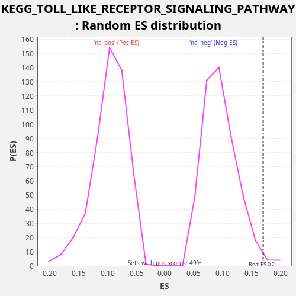

Profile of the Running ES Score & Positions of GeneSet Members on the Rank Ordered List
The same image in compressed SVG format
| Dataset | LabCL |
| Phenotype | NoPhenotypeAvailable |
| Upregulated in class | na_pos |
| GeneSet | KEGG_TOLL_LIKE_RECEPTOR_SIGNALING_PATHWAY |
| Enrichment Score (ES) | 0.16979805 |
| Normalized Enrichment Score (NES) | 1.7732906 |
| Nominal p-value | 0.01443299 |
| FDR q-value | 0.09658428 |
| FWER p-Value | 0.792 |
| SYMBOL | RANK IN GENE LIST | RANK METRIC SCORE | RUNNING ES | CORE ENRICHMENT | |
|---|---|---|---|---|---|
| 1 | STAT1 | 21 | 272.058 | 0.0116 | Yes |
| 2 | CCL5 | 76 | 84.339 | 0.0219 | Yes |
| 3 | IL6 | 234 | 27.409 | 0.0279 | Yes |
| 4 | IRF7 | 392 | 15.987 | 0.0339 | Yes |
| 5 | CASP8 | 438 | 14.014 | 0.0445 | Yes |
| 6 | IFNB1 | 606 | 9.116 | 0.0501 | Yes |
| 7 | TLR3 | 646 | 8.340 | 0.0610 | Yes |
| 8 | CD14 | 697 | 7.573 | 0.0714 | Yes |
| 9 | TOLLIP | 740 | 7.001 | 0.0822 | Yes |
| 10 | CXCL10 | 1096 | 3.825 | 0.0800 | Yes |
| 11 | PIK3R1 | 1113 | 3.771 | 0.0919 | Yes |
| 12 | RELA | 1345 | 2.608 | 0.0948 | Yes |
| 13 | PIK3CD | 1430 | 2.348 | 0.1038 | Yes |
| 14 | RIPK1 | 1550 | 2.028 | 0.1114 | Yes |
| 15 | TLR4 | 1558 | 1.995 | 0.1236 | Yes |
| 16 | AKT3 | 1633 | 1.834 | 0.1330 | Yes |
| 17 | IKBKB | 1667 | 1.739 | 0.1442 | Yes |
| 18 | CCL3 | 1670 | 1.738 | 0.1566 | Yes |
| 19 | TBK1 | 1673 | 1.730 | 0.1690 | Yes |
| 20 | IKBKG | 1957 | 1.270 | 0.1698 | Yes |
| 21 | FADD | 2730 | 0.624 | 0.1503 | No |
| 22 | NFKBIA | 3084 | 0.466 | 0.1482 | No |
| 23 | MAP3K8 | 3253 | 0.405 | 0.1538 | No |
| 24 | IRF3 | 3505 | 0.334 | 0.1559 | No |
| 25 | MAPK14 | 3782 | 0.273 | 0.1570 | No |
| 26 | MAP3K7 | 4220 | 0.197 | 0.1514 | No |
| 27 | CXCL11 | 4235 | 0.196 | 0.1633 | No |
| 28 | IRF5 | 5392 | 0.085 | 0.1280 | No |
| 29 | TICAM2 | 5526 | 0.078 | 0.1350 | No |
| 30 | PIK3CA | 5552 | 0.076 | 0.1464 | No |
| 31 | RAC1 | 5587 | 0.074 | 0.1575 | No |
| 32 | IRAK4 | 6347 | 0.041 | 0.1386 | No |
| 33 | IL12A | 6487 | 0.036 | 0.1454 | No |
| 34 | IKBKE | 6535 | 0.035 | 0.1559 | No |
| 35 | MAP2K2 | 7294 | 0.017 | 0.1371 | No |
| 36 | MYD88 | 7899 | 0.009 | 0.1246 | No |
| 37 | NFKB1 | 8863 | 0.002 | 0.0972 | No |
| 38 | TAB2 | 8910 | 0.002 | 0.1078 | No |
| 39 | MAPK12 | 9264 | 0.001 | 0.1057 | No |
| 40 | TRAF6 | 9661 | 0.000 | 0.1018 | No |
| 41 | TLR7 | 10264 | 0.000 | 0.0894 | No |
| 42 | TNF | 10265 | 0.000 | 0.1019 | No |
| 43 | AKT2 | 10474 | -0.000 | 0.1058 | No |
| 44 | MAP2K4 | 11740 | -0.005 | 0.0659 | No |
| 45 | AKT1 | 11870 | -0.006 | 0.0731 | No |
| 46 | CHUK | 12549 | -0.012 | 0.0575 | No |
| 47 | CXCL8 | 12895 | -0.016 | 0.0558 | No |
| 48 | MAP2K1 | 13183 | -0.020 | 0.0564 | No |
| 49 | MAPK3 | 13575 | -0.026 | 0.0527 | No |
| 50 | CD40 | 14171 | -0.039 | 0.0406 | No |
| 51 | TLR2 | 14311 | -0.043 | 0.0473 | No |
| 52 | MAPK9 | 14510 | -0.048 | 0.0516 | No |
| 53 | MAP2K3 | 14587 | -0.050 | 0.0610 | No |
| 54 | TIRAP | 14624 | -0.052 | 0.0720 | No |
| 55 | LY96 | 14797 | -0.057 | 0.0774 | No |
| 56 | MAP2K6 | 15172 | -0.072 | 0.0744 | No |
| 57 | PIK3R2 | 15597 | -0.087 | 0.0694 | No |
| 58 | TICAM1 | 16564 | -0.138 | 0.0419 | No |
| 59 | CTSK | 16591 | -0.139 | 0.0533 | No |
| 60 | MAPK11 | 16784 | -0.154 | 0.0579 | No |
| 61 | IFNAR2 | 16994 | -0.168 | 0.0617 | No |
| 62 | MAPK1 | 17158 | -0.182 | 0.0675 | No |
| 63 | TRAF3 | 17264 | -0.191 | 0.0756 | No |
| 64 | TAB1 | 17735 | -0.236 | 0.0687 | No |
| 65 | IFNAR1 | 18361 | -0.313 | 0.0553 | No |
| 66 | IRAK1 | 18391 | -0.316 | 0.0666 | No |
| 67 | MAP2K7 | 18655 | -0.355 | 0.0682 | No |
| 68 | JUN | 19880 | -0.626 | 0.0301 | No |
| 69 | IL1B | 19910 | -0.635 | 0.0414 | No |
| 70 | PIK3CB | 20106 | -0.698 | 0.0458 | No |
| 71 | MAPK13 | 20439 | -0.831 | 0.0446 | No |
| 72 | TLR1 | 20557 | -0.889 | 0.0522 | No |
| 73 | PIK3CG | 20677 | -0.959 | 0.0598 | No |
| 74 | SPP1 | 20686 | -0.963 | 0.0720 | No |
| 75 | MAPK8 | 22531 | -3.612 | 0.0081 | No |
| 76 | PIK3R3 | 22788 | -4.814 | 0.0100 | No |
| 77 | MAPK10 | 23287 | -9.536 | 0.0019 | No |
| 78 | FOS | 23291 | -9.593 | 0.0143 | No |
| 79 | TLR5 | 23502 | -13.588 | 0.0181 | No |
| 80 | TLR6 | 23829 | -28.476 | 0.0171 | No |

{kind=link}
{kind=link}